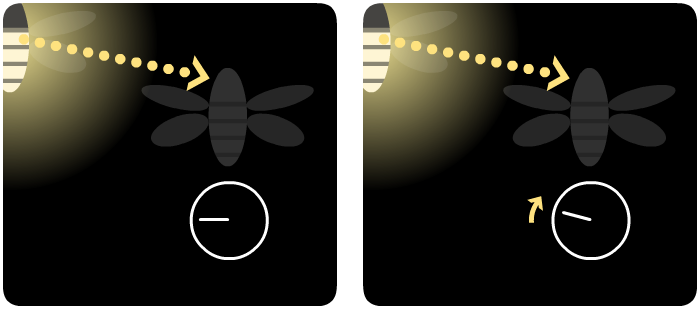

“Fireflies”
Like Christmas lights gently floating in midair, fireflies always add a little bit of magic to the forests they live in.
But some firefly species add even more magic. In Southeast Asia, if you go out to the riverbank deep in the night, you'll be treated to this stunning lightshow – courtesy of the Thailand firefly:
A whole mangrove forest, lighting up all at once, plunging into darkness, then lighting up all again – in near-perfect synchrony. How do thousands of fireflies coordinate with each other? Who is the conductor of this silent symphony?
This was a mystery for nearly a century, and in 1992, a team of US scientists set out to solve it. Sadly, but not surprisingly, the press mocked them – “Govt. Blows Your Tax $$ to Study Fireflies in Borneo: Not a Bright Idea!” read one tabloid. Undeterred, the scientists pressed on, cameras and calculators in hand.
So, how do thousands of fireflies pick a leader to follow, a maestro to keep their flashing in time? The answer, the scientists found, is simple:
They don't.
Each firefly has its own individual internal clock, and every time the clock “strikes twelve”, it flashes.

And instead of synchronizing their clocks to a central leader, each firefly does the following:
Step 1: when you see a nearby firefly flash, nudge your clock a little bit forward.

Step 2: that's it.
Can such a small, short-ranged interaction really cause an entire forest-ful of fireflies to flash in synchronous harmony? Only one way to find out...
Wait. Watch carefully.
What do you see?
At first, not much. The fireflies still seem to be flashing without pattern.
But after a while, you may notice small “patches” of fireflies firing together – but these individual “patches” are still out of sync.
After a bit longer, you start seeing fireflies performing a “wave”, like excited fans in the stands during a baseball game.
Finally, all but a few fireflies are flashing together – and eventually, even these laggards join in the collective dance.
What's more amazing? If you disrupt these fireflies by causing some chaos...
...yes, it may cause them to divide for a moment, but slowly and surely, they shall collect themselves again, and flash as one.
Here's a few more buttons & sliders you can use, to play around with these virtual fireflies:
And that's the secret behind our fireflies' magic trick:
As it turns out, fireflies aren't the only things that synchronize themselves from the bottom up. Your neurons create brain waves. Your heart's pacemaker cells fire in sync. Even a bunch of lifeless metronomes on a wobbly platform will start to march together. On top of all that, understanding self-synchrony has helped us build better lasers, computers, and communications technology!
And to think, the mathematics of self-synchronizing systems was discovered in part by a few scientists who just really loved fireflies. Looks like calling their project “Not a Bright Idea” was not a bright idea.
. . .
You float along, softly, in silence, occasionally punctuating the darkness with a flash of bright light. You're beautiful in your own right, but by yourself, you're not really that interesting.
But whenever you flash your light, you inspire those close to you to flash too, a little bit sooner than they otherwise would have. And those close to you, in turn, inspire those close to them.
And so on, and so on.
For a long time, nothing seems to happen. Then, a few small groups start flashing together. Then, a wave of light sweeps across the swarm. And finally, you're all dazzling together, a brilliant beacon, all in harmony, in tandem – in synchrony.
What small-scale interaction will you make today, little firefly?